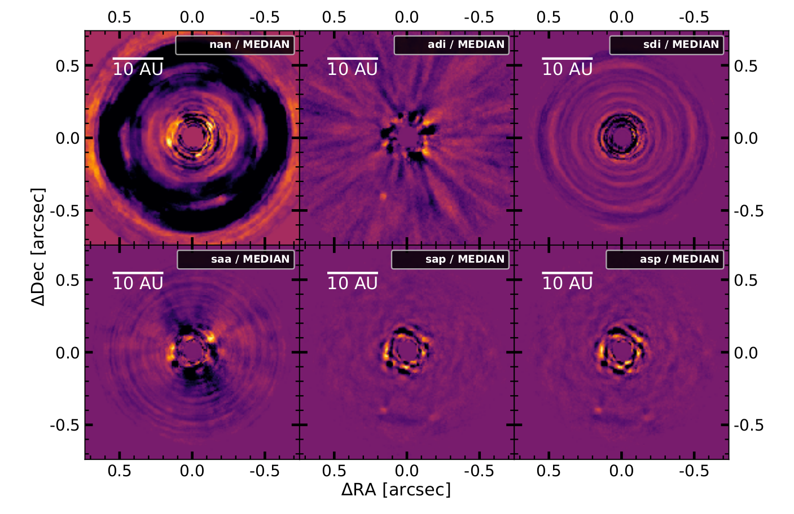

Research
We slowly begin to understand the fascinating diversity of exoplanets in our galaxy and I have been fascinated ever since. With my work, I want to deepen our understanding of exoplanet atmospheres. I use disequilibrium chemistry models and global cirrculation models (GCMs) to model cloud formation.
First author publications
We combine angular differnetial imaging (ADI) with spectral differential imaging (SDI) to investigate 3 different imaging techniques for spectral direct imaging: ASDI, SADI and CODI.
Using SPHERE/IFS observations we test the techniques on Beta Pictoris b, 51 Eridani b and HR 8799 e.
Our results show that combining SDI with ADI in general can help and that CODI achieves overall the best results.
This paper marks the conclusion of my Master Thesis
Co-author publications
In this work, we implemented a fully coupled radiative transfer based on petitRADTRANS into MITgcm. With it, we analysed the temperature and wind structure of the two Hot Jupiters HD 209458b and WASP-43b.
To analyse the impact of clouds on 3D exoplanets, implementing cloud formation into the MITgcm is one of my core tasks. This paper does not yet include any cloud modelling but it provides the basis for future implementation.
Conferences

Research Projects
Master Thesis: Spectral characterization of companions around Young Suns

Even though direct imaging detection only gave us a handful of planets, they are crucial to study exoplanet characteristics. For my Master Thesis I colaborated with the Leiden Observatory which hosted my for half a year for this project. The aim of this project was to utilise the spectral information available within SPHERE/IFS observation to improve the quality of direct imaging. To this end, we tested and implemented 4 different spectral differential imaging (SDI) techniques into PynPoint. Furthermore, we looked into ways to destinguish background stars from actual exoplanets. In the end, the core of this work has been published.
Semester Project: Implementation and Improvement of an MCP anod

Measuring fundamental particles is no easy task. Previously to this work, an MCP anode has been designed to detect the number and position of positrons. In this project, we tested the anod in 3 different set ups. This tests showed a critical design flaw in the design of the anode. The currents within the anode after a positron impacts can damage the thin carbon layer used. To prepare for future improvements of the anode we performed simulations to calculate the maximum currents that can occur within the anode. The simulations also showed that it is difficult to balance precises position determination and robustness to strong currents.
Semester Project: To Measure a Tranist with a 0.5m Telescope
Every astronomer living in a big city knows the frustration of star-less skies. With this work we aimed to answer if an exoplanetary transit can be measured with the 0.5m Telescope at Hoengerberg in the middle of Zurich. Colaborating wiht Adrian Gheorghe, we developed python routines to read out accurate brightness measurements of stars. During a period of 6 months, we conducted 6 observation of stars with known Hot Jupiter transits. In the end, we were able to extract two reasonable transit light curves. One of these were later used in a follow up study to confirm the exoplanetary transit.